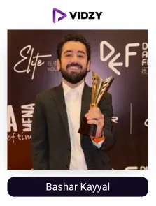
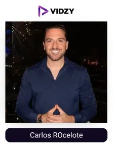
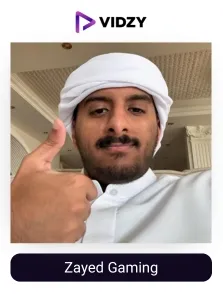
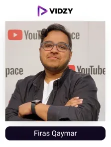
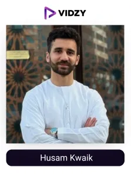
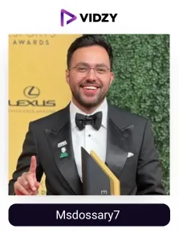
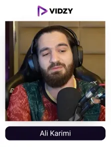
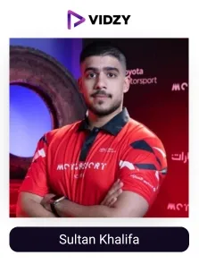
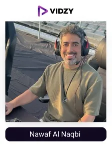
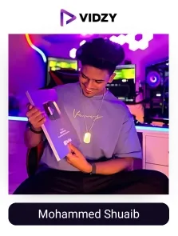

Games are a fun and exciting way to relax, and online games make this experience even better. It allows us to enter a new, fascinating world of adventures and challenges and make connections with game lovers all around the world.
Dubai, with its advanced technology, has witnessed rapid growth in all sectors, and the gaming industry is one among them, expected to reach USD 1.65 billion by 2030. The High-speed internet, tech-savvy people, and modern gaming facilities have contributed to the growth of the industry. Events like the Dubai Esports Festival connect gamers from all around the world, further expanding the industry's growth.
On social media, gaming UGC creators in Dubai are the major contributors of gaming content. They connect the gaming enthusiast audience with the latest gaming trends, new games, and competitions, thereby creating a strong community and boosting the economic growth of the industry. As per reports, the UAE is ranked 5th globally for gaming influencers, showcasing their strong influence in the region.
For example, Barsharkk, a leading Arabic-speaking gamer from Dubai, frequently teams up with PUBG Mobile MENA to host official in-game challenges, exciting giveaways, and competitive esports events. Through his exclusive live streams and real-time interactive content in Arabic, he motivates fans to participate actively while driving app downloads.
Gaming brands have recognised their potential in the overall growth of the industry. They are collaborating with these famous gaming influencers to utilise the power of UGC to boost their awareness and trust, and credibility and achieve remarkable results, as an enhancement in conversions.
But it can be challenging for gaming brands to find the right influencer to execute their campaigns successfully. Being the top UGC agency in Dubai, Vidzy, with more than 8 years of experience in creating and delivering high-performing UGC campaigns and helping brands achieve their goals, we have researched and curated the list of top gaming UGC creators in the UAE.
With that, let's get to know who the gaming UGC creators are in detail.
Who are Gaming UGC creators?
Gaming UGC creators are people who share content related to games on their social media platforms, entertainingly and thrillingly. They create detailed videos about specific games and share their experience and valuable tips with their gaming enthusiast audience.
They also share new techniques, reviews of games, and the latest trends in the industry. Their vast knowledge of gaming consoles, software, gear, and accessories is helpful for occasional as well as professional gamers. Even gaming-themed clothing and various other merchandise get highlighted in their content.
Their engaging and entertaining content helps them connect deeply with audiences and thereby influence their buying decision. According to studies, gaming influencers are the most popular type of influencers followed globally, mostly by the male audience, which shows their strong impact on consumer behaviour, especially among Gen Z and Millennials. (YouGov)
Let us explore them!
Top Gaming UGC creators in Dubai, UAE
Contents
-

1. Bashar Kayyal
Channel: Bashar Kayyal
Followers: 857KEngagement Rate: 2.44%About The Influencers-
Bashar is a Gaming content creator from Dubai. His gaming passion has helped him achieve many prestigious awards like the Biggest Gaming YouTuber in the UAE, TikTok Gaming star, and Filmfare Best Gaming influencer. He creates exciting videos where he plays games like Call of Duty and Minecraft and shares his reviews with his followers.
Bashar has worked with big brands like Monster Energy and has also visited gaming events such as the Dubai Esports and Games Festival. Gaming enthusiasts around the region trust his opinions about games and products.
-

2. Carlos ROcelote
Channel: Carlos ROcelote
Followers: 184KEngagement Rate: 1.93%About The Influencers-
Carlos is a popular Gaming influencer from Dubai. He is known as @oceloteworld on Instagram. He is the founder of G2 Esports. Carlos shares his gaming experiences and insights with his followers. He actively engages with his fan base.
His friendly personality and amusing videos helped him create a trusted gaming community in the region.
-

3. Zayed Gaming
Channel: Zayed Gaming
Followers: 36.9KEngagement Rate: 3.30 %About The Influencers-
Zayed is a well-known gaming UGC creator. He shares content on gaming and his humorous side through funny skits. He loves playing games and sharing tricks and skills with his audiences. He keeps his followers updated with new gear and accessories necessary for getting thrilling and fun experiences with their gaming adventures.
Zayed is a favourite among the gamer community due to his simplicity and humour in presenting the content.
-

4. Firas Qaymar
Channel: Firas Qaymar
Followers: 746KEngagement Rate: 1.76%About The Influencers-
Firas is a well-known gaming content creator from Dubai. He loves sharing his gaming skills and experiences with his audience. His content mostly consists of his real playing moments, tips to excel in games, and the best accessories that can be used to experience and feel the game. His informative and entertaining content makes his audience feel connected.
His love and passion for gaming and his way of content delivery have made him a well-known figure among gaming enthusiasts.
-

5. Husam Kwaik
Channel: Husam Kwaik
Followers: 1.8MEngagement Rate: 1.98%About The Influencers-
Husam Kwaik is a popular content creator living in Dubai. He creates content on gaming, his life, and also shares hilarious jokes for his audience to enjoy. He has won the award for the Best Humour Content Creator in the Arab world. He has worked with big brands like Sony Middle East and has participated in many gaming events in Dubai.
His content is creative and funny, which makes him one of the most loved creators in the region.
-

6. Msdossary7
Channel: Msdossary7
Followers: 444KEngagement Rate: 5.63%About The Influencers-
Msdossary7 is a prominent gaming influencer and the chairman of Team Falcons, a famous esports organisation. He is a FIFA World Champion and has been honoured as the Esports Player of the Year thrice.
He is also a Red Bull athlete. His content consists of tournament highlights, behind-the-scenes moments, and his gaming interests, like motorsports.
-

7. Ali Karimi
Channel: Ali Karimi
Followers: 425KEngagement Rate: 8.64%About The Influencers-
Ali Karimi is a well-known gamer based in Dubai. His Instagram profile is a fun space for gaming enthusiasts and football fans alike. He shares gaming highlights, football-related moments, and some glimpses into his life with his followers.
Ali is also a passionate Twitch streamer and YouTuber who believes football is God’s gift to humanity. He is an admired gamer among his Dubai and Tehran audiences.
-

8. Sultan Khalifa
Channel: Sultan Khalifa
Followers: 90KEngagement Rate: 1.57%About The Influencers-
Sultan Khalifa is a gaming content creator and professional racing driver. He is a brand ambassador for Toyota Gazoo Racing and is sponsored by Toyota UAE. He is also a UAE Sim Racing Champion. On Instagram, Sultan shares his exciting virtual racing and real-world motorsports journey with his followers.
His posts include his racing highlights, best moments, and brand collaborations, which give an amazing experience to his gaming enthusiast audience.
-

9. Nawaf Al Naqbi
Channel: Nawaf Al Naqbi
Followers: 249KEngagement Rate: 1.14%About The Influencers-
Nawaf Al Naqbi is a popular gamer based in Dubai who shares his love for gaming, music, and anime. He is also a guitarist and often plays music from various anime shows and video games. His gaming posts consist of clips from his gameplay, fun reactions, and moments from live streams.
He is a skilled gamer whose love for games, together with music and anime, makes him an admired influencer in the gaming community.
-

10. Mohammed Shuaib
Channel: Mohammed Shuaib
Followers: 549KEngagement Rate: 22.99%About The Influencers-
Mohammed Shuaib is a well-known gaming video creator and athlete, recognised as @zhyrxgaming on Instagram. His content includes his gameplay highlights, tournament plays, and combat sequences. His main focus is on games like BGMI and PUBG. His gaming skills have earned him much praise from his gaming enthusiasts.
His strong gaming community in both India and Dubai appreciates him for his ability to make quick decisions and his accuracy in gaming.
Conclusion
In Dubai, gaming UGC creators are trusted voices in the world of online entertainment. From streaming intense gameplay to reviewing the latest gaming gear, their content connects with a highly engaged audience that values real experiences and expert insights.
Their honest reviews, live sessions, and tutorials influence audience perceptions and buying decisions. That’s why leading gaming brands in the UAE collaborate with them to boost awareness, build trust, and increase sales.
As the leading UGC agency, we help brands in Dubai partner with the most impactful gaming creators to produce authentic, high-performing content that truly resonates with gamers and gives outstanding results.
Ready to utilise the power of UGC and the most trusted voices in the industry to change your brand game. Let’s collaborate and turn the campaign into a winning strategy.